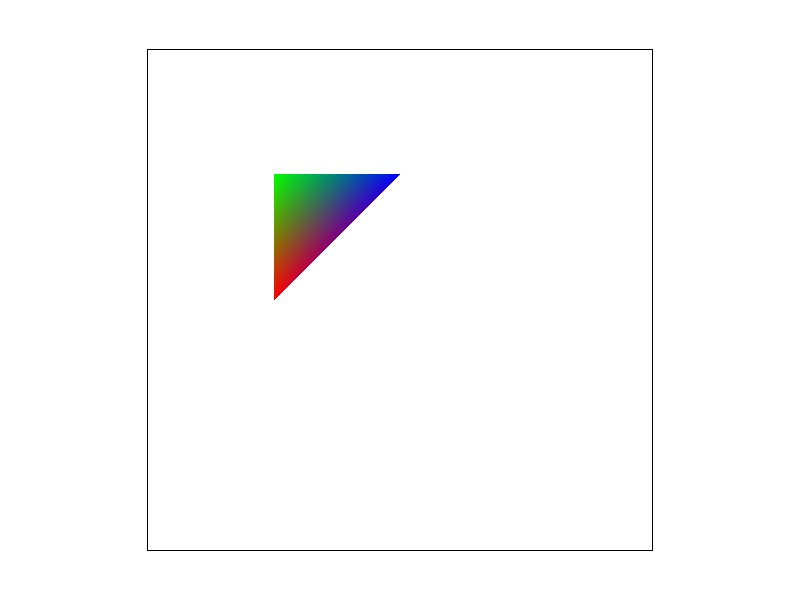

https://cal-cs184-student.github.io/hw-webpages-sp24-antony-zhao/hw1/index.html
Task 1:
We rasterize triangles by checking if points lie within the triangle defined by the three points. We do this by sampling points and see
if their center (their coordinate + 0.5) lies within intersection of the lines that define the triangle. There is also a check to ensure that the direction is defined
correctly since the points may be in a different order. We check all the pixels that lie within the bounding box that defines the triangle, so it's the same as checking each sample within the
bounding box of the triangle.

Task 2:
In order to account for supersampling, we multiply the sample_buffer by the sample_rate, and treat the grid as sqrt(sample_rate) * width by sqrt(sample_rate) * height
in the rasterize_triangle function. This also means we have to multiply all the point coordinates by sqrt(sample_rate) as well. We account for this later by in resolve_to_framebuffer
where we average the colors across squares of size sample_rate.
One reason we use supersampling is to deal with jaggies, as it allows some pixels to take intermediate values, smoothing out the jaggies. This is done by the averaging step when
resolving to the framebuffer, as it allows pixels to take intermediate values, smoothing out the parts between corners and making the pattern less jagged.
1x

4x

16x

We can see that, as the supersampling increases, these corners blur more and more, and significantly reduce the amount of jaggedness to the corner (when zoomed out).
Task 3:
We attempted to mimic the famous "yamcha" pose of a person lying on the floor on their side (usually in a crater). We moved the arms/legs in order to mimic the pose.

Task 4:

Barycentric coordinates are a representation of the relative coordinate of a point in a triangle. This is done by representing the point using alpha beta and gamma,
which sum to 1, and effectively represent how far a point is from each respective corner
of the triangle. We leverage it in this task in order to interpolate the color of the triangle,
which you can see as the color smoothly transitions from red to green to blue along the edges/corners. We can also see that this interpolated color also continues
in the middle of the triangle.

Task 5:
Pixel sampling is the process of choosing pixels to do a low-resolution representation of an image.
The goal is to make sure that this doesn't produce artifacts such as the moire pattern or jaggies.
To do texture mapping, we do sampling on the texture coordinate function (which we get from the mipmap)
to get the pixel values in the resulting images.
For this problem this comes from the level 0 mip. Using nearest sampling we simply choose the color of the texture closest to the u,v coordinate,
whereas for bilinear interpolation,
we linearly interpolate between the nearest 4 points to get the color of the pixel.
1x nearest
.png)
1x bilinear
.png)
16x nearest
.png)
16x bilinear
.png)
It is a bit noticeable in the upper images, where using bilinear interpolation reduces jaggies on the letter B compared to nearest sampling, especially without supersampling.
This is likely more obvious when trying to sample on a sharper corner such as a triangle.
Task 6:
Level sampling involves determining the relative amount of detail some pixels may have, which allows us to use lower resolution texture functions. We use level sampling
to determine which level of mip to use for the texture at points in the image. This allows us to reduce the amount of computation and can speed up computation.
We did texture sampling by computing how much the barycentric u, v coordinates change with respect to the x, y coordinates in the image, and using how far away the u, v
points are from one another we can determine which level mip we need to represent the point. Depending on the option, we either chose level 0 (L_ZERO),
the level closest to the level calculated (L_NEAREST), or we interoplate between the two closest levels.
l_zero, p_nearest
.png)
l_zero, p_linear
.png)
l_nearest, p_nearest
.png)
l_nearest, p_linear
.png)